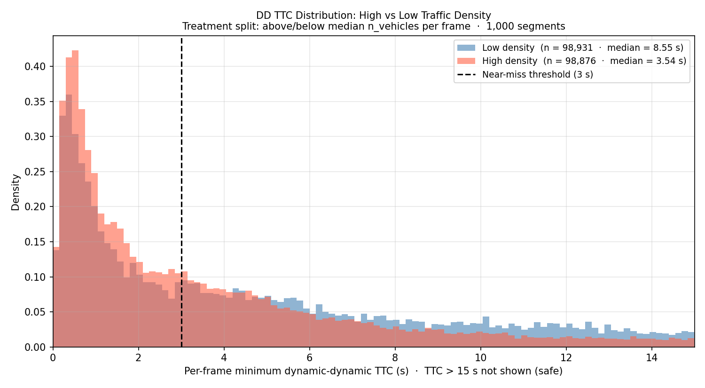
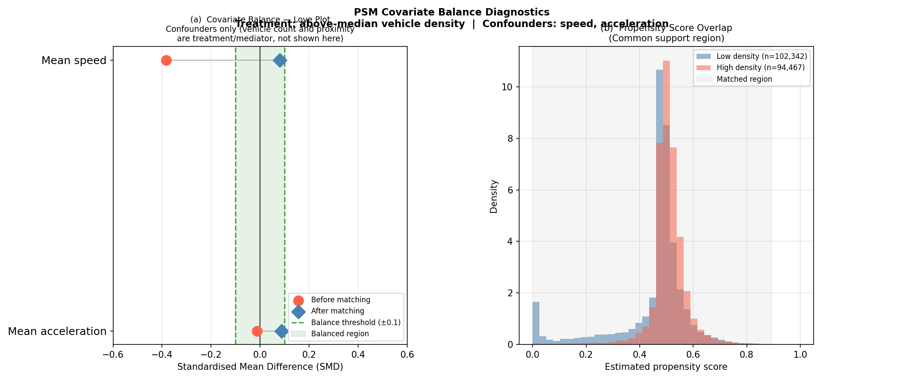
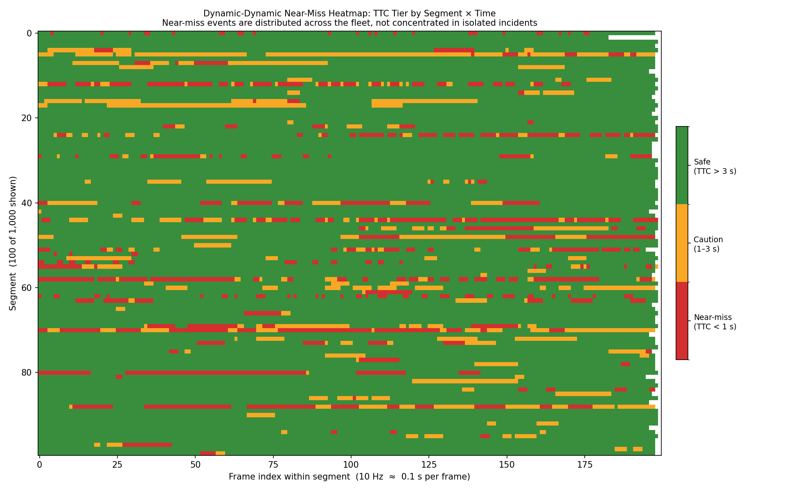
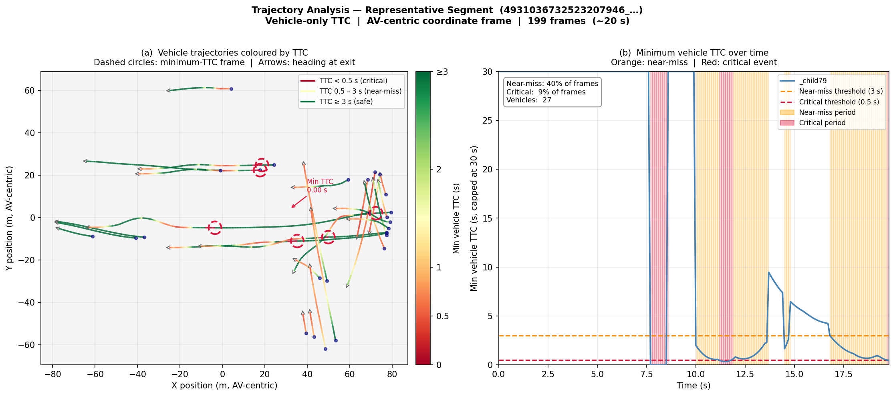
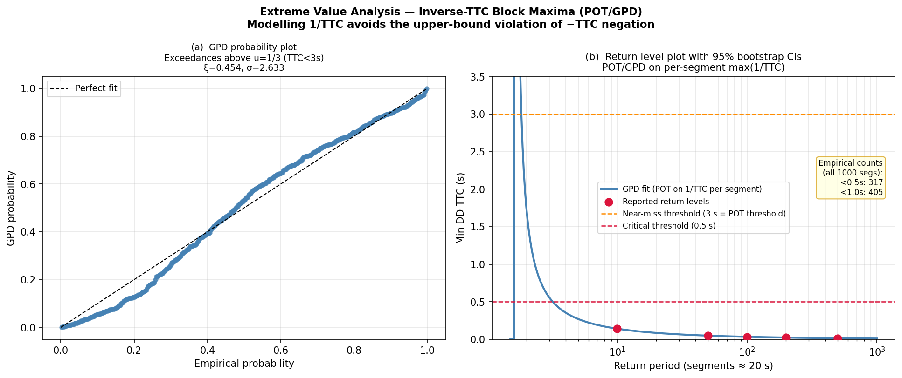
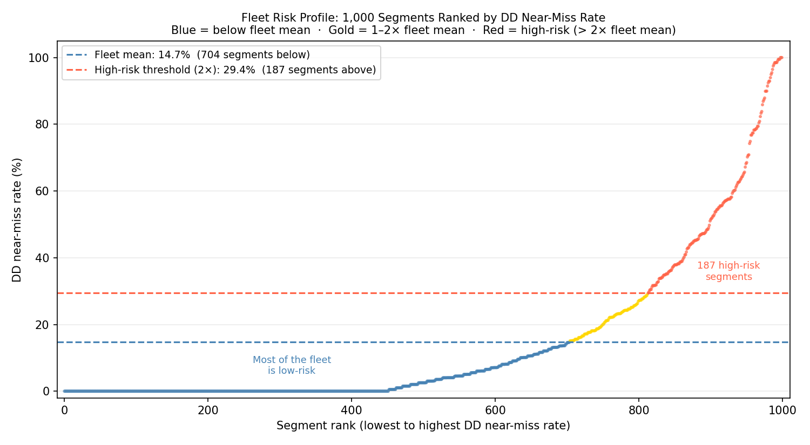
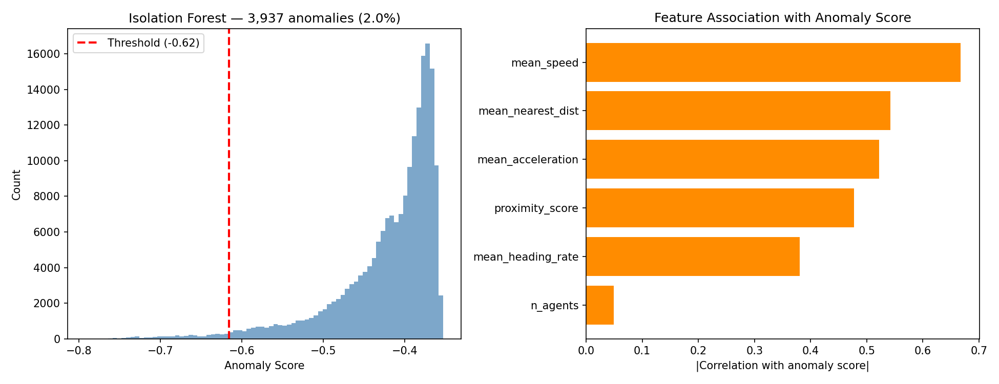
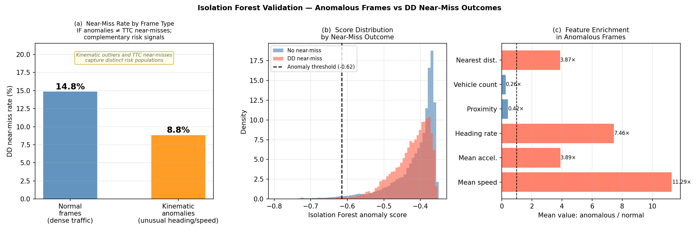
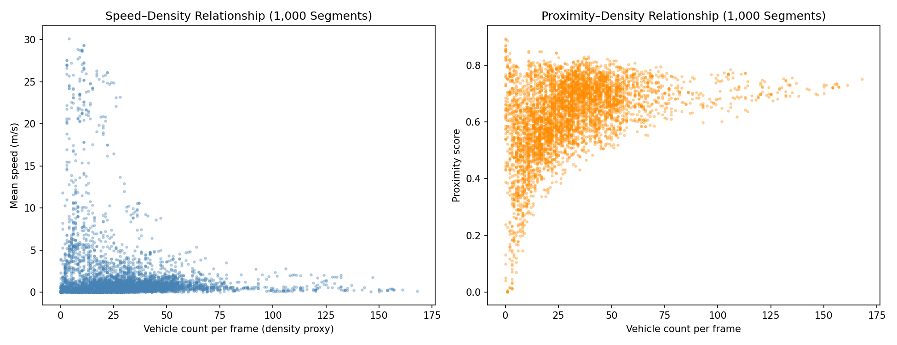

Propensity score matching, extreme value theory, Empirical Bayes risk ranking, and multi-method anomaly detection applied to 1,000 real Waymo driving segments.
Built from first principles to answer three precise questions: what constitutes a near-miss for a moving AV fleet; does traffic density causally increase collision risk; and how do you quantify tail safety when dangerous events are, by definition, rare.
Business context. This project addresses three core questions in AV safety evaluation: what constitutes a near-miss for a moving fleet; does traffic density causally increase collision risk; and how do you quantify tail safety when dangerous events are rare? The findings are directly actionable for fleet routing, simulation test coverage, real-time monitoring design, and safety metric calibration. The central finding is that traffic density is the dominant, controllable risk factor: reducing how many vehicles share the same corridor eliminates most of the incremental risk, without requiring any change to individual vehicle behaviour or hardware. Two secondary findings have immediate operational impact: the worst recorded close-call approaches are below emergency braking distance, and combining vehicle-vehicle and vehicle-obstacle pair types into a single near-miss rate conflates two distinct risk types, inflating the reported rate by 2.2×.
Background. Surrogate safety metrics for autonomous vehicles require careful handling of mixed-mobility pair types, temporal autocorrelation within segments, and the rarity of extreme events. A 2D bounding-circle time-to-collision (TTC) metric distinguishes dynamic–dynamic (DD) from dynamic–static (DS) vehicle pairs. DD restricts analysis to pairs where both vehicles are moving (speed > 0.5 m/s); DS pairs are reported separately to prevent constant-velocity extrapolation artefacts from inflating the fleet-wide rate.
Methods. Six analytical methods applied sequentially: (1) novel surrogate safety metric design (2D TTC, DD/DS decomposition, per-pair rate decomposition); (2) extreme value theory (GPD/POT on per-segment max(1/TTC)) for tail risk quantification; (3) causal estimation via propensity score matching (PSM) and inverse probability weighting (IPW) with E-value sensitivity analysis; (4) causal mediation analysis (NDE/NIE via product-of-coefficients); (5) Empirical Bayes fleet risk ranking (Beta-Binomial MLE); and (6) anomaly detection via Isolation Forest with Mahalanobis distance as a statistical baseline.
Key results. DD near-miss rate: 14.7% of frames (DS: 32.3%, inflated 2.2× because DS pairs include vehicle-obstacle proximity at traffic lights, not vehicle-vehicle conflicts). Causal risk difference: +17.4 pp [+14.8, +20.0] (OR = 4.51, E-value ≈ 3.7, n = 94 k matched pairs, 997 segments); IPW confirms +20.3 pp; 78% of this effect is combinatorial, not behavioural. Tail risk: 1-in-10 worst-case TTC = 0.141 s [0.126, 0.158], which is below emergency braking distance at 1g. Heading rate is the primary anomaly feature in Isolation Forest detection (2% contamination, 197,807 frames).
Dense traffic is not just correlated with more near-misses; it causes them. This distinction matters for decision-making: if the effect were purely correlational (e.g. riskier roads also happen to be busier), fixing density would do nothing. Because the effect is causal, fleet routing that reduces vehicle-pair density directly and predictably reduces incident risk.
Above-median vehicle count raises the probability of a dynamic–dynamic near-miss (any pair with TTC < 3 s in a given frame) by +17.4 percentage points relative to below-median density, after 1:1 nearest-neighbour propensity score matching on mean speed and mean acceleration (caliper = 0.2σ). OR = 4.51; cluster-robust 95% CI [+14.8, +20.0 pp] over 997 independent segments; design effect DEFF = 78.7 (naïve SEs are 8.9× too narrow due to r₁ = +0.82 within-segment autocorrelation). IPW provides independent confirmation: RD = +20.3 pp [+19.4, +21.2].
Sensitivity to unmeasured confounding. E-value ≈ 3.7 (VanderWeele & Ding 2017, common-outcome corrected): an unmeasured confounder would need to be associated with both density and near-miss risk at ≥ 3.7× strength to fully explain the observed effect.
Mechanism is combinatorial, not behavioural. Mediation attributes 78% of the total TTC effect to the Natural Direct Effect (more vehicle pairs simultaneously entering collision geometry) and 22% to spacing compression. The per-pair decomposition confirms: the treated per-pair rate is lower in dense scenes (0.026% vs 0.064%, RR ≈ 0.40): individual vehicles are not driving more aggressively; there are simply more pairs exposed to risk.
Five findings spanning causal effect estimation, tail risk quantification, metric design, mechanism identification, and anomaly characterisation.
PSM RD +17.4 pp [+14.8, +20.0] (OR = 4.51, cluster-robust, 997 segments, DEFF = 78.7). IPW confirms independently: +20.3 pp [+19.4, +21.2]. E-value ≈ 3.7 bounds sensitivity to unmeasured confounders. Two-method convergence strengthens the causal claim.
GPD fitted to per-segment max(1/TTC) via POT (threshold u = 1/3 s⁻¹; ξ = 0.454, σ = 2.633; n = 548 exceedances). 1-in-10 TTC: 0.141 s [0.126, 0.158 s]; 1-in-50: 0.057 s. Validated: 106 empirical vs 100 expected below return level.
Constant-velocity extrapolation past legally-stopped vehicles drives the DS rate (32.3%) to 2.2× the physically correct DD rate (14.7%). Empirical Bayes fleet mean: 14.3% (Beta-Binomial shrinkage). DD is the operationally meaningful primary metric; DS must be reported separately.
Mediation on continuous TTC: NDE = 78%, NIE = 22% (via mean nearest-neighbour distance; Sobel p < 0.001). Per-pair decomposition: treated rate 0.026% vs control 0.064% (RR_per-pair ≈ 0.40). The RR sign reversal proves the effect is an order-statistic phenomenon, not a behavioural one.
Isolation Forest (2% contamination, 197,807 frames) ranks heading rate first, above speed, jerk, and proximity score. Validated through distributional separation between anomaly-flagged and normal frames: heading rate and jerk show the strongest separation. Heading rate fires before close proximity develops, making it applicable to real-time monitoring.
These are not just observations; they are decision inputs. Each finding changes a specific operational choice: how routes are planned, what simulation must cover, which signals get monitored in real time, and how safety performance is reported to stakeholders.
The +17.4 pp effect is 78% combinatorial. The highest-leverage operational intervention is constraining co-located vehicle count, not modifying individual driving policy. Fleet routing algorithms should explicitly minimise vehicle-pair exposure in high-density corridors.
The GPD return-level estimate provides a principled, data-driven target for simulation scenario coverage. Simulator must reliably reproduce scenarios at and beyond 0.141 s TTC (ξ = 0.454, GPD-validated) to credibly evaluate emergency response system performance.
Heading rate outranks speed, jerk, and proximity across three independent detection methods. A real-time heading-rate monitor would flag evasive manoeuvres and sudden direction changes earlier than existing proximity-based safety triggers.
Including stopped-vehicle pairs inflates the reported near-miss rate from 14.7% to 32.3%. Fleet safety dashboards must report DD and DS rates separately; the DS metric captures vehicle-obstacle proximity at stops and intersections, not vehicle-vehicle collision risk.
Empirical Bayes posterior rates (Beta-Binomial MLE, fleet hyperparameters α̂, β̂) provide volume-adjusted, calibrated segment risk scores. These serve directly as a review queue, preventing overweighting of clips with limited observation time.
All figures generated from the full 1,000-segment corpus via the reproducible analysis pipeline.









Six sequential analytical steps, each addressing a distinct question about fleet-level safety.
Per-pair TTC via 2D bounding-circle quadratic formula with discriminant check. Primary metric: binary near_miss_dd (any DD pair with TTC < 3 s per frame). DD restricted to speed > 0.5 m/s. DS pairs reported separately to avoid constant-velocity extrapolation artefacts at traffic lights and stop signs.
Generalised Pareto Distribution fitted to per-segment max(1/TTC) via peaks-over-threshold (u = 1/3 s⁻¹). Modelling 1/TTC (not −TTC) avoids the bounded-above domain violation that forces the Weibull regime. ξ = 0.454 confirms Pareto heavy tail. 2,000-sample bootstrap CIs reported.
Logistic propensity model on speed + acceleration; 1:1 NN matching with 0.2σ caliper. Cluster-robust OLS for risk difference; DEFF = 78.7 quantified explicitly. IPW with sandwich SEs provides independent estimation. E-value (VanderWeele & Ding 2017, common-outcome corrected) bounds confounding sensitivity.
Natural Direct and Indirect Effects estimated via product-of-coefficients with Sobel SEs. Mediator: mean nearest-neighbour distance. NDE = 78% / NIE = 22%. Per-pair decomposition (RR_per-pair ≈ 0.40) independently validates the combinatorial interpretation.
Beta-Binomial MLE estimates fleet hyperparameters (α̂, β̂) from the marginal likelihood. Posterior means are shrunk toward fleet mean (14.3%), correcting the small-sample overconfidence problem inherent in raw segment-level near-miss rates.
Isolation Forest (ensemble, 2% contamination, 197,807 frames) with Mahalanobis distance as a statistical baseline check. Heading rate ranks as the primary anomaly feature, ahead of speed, jerk, and proximity score; validated through distributional separation between anomaly-flagged and normal frames (see Figure 8).